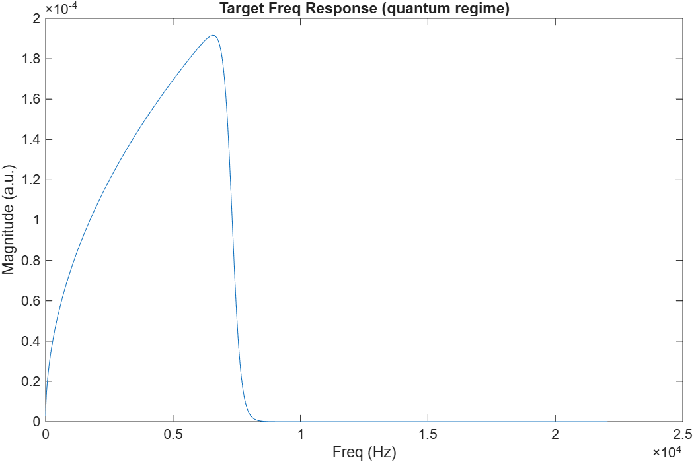
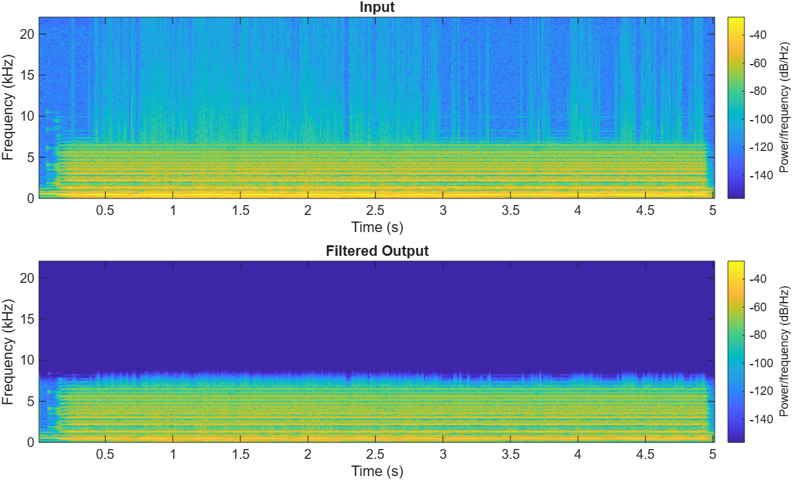
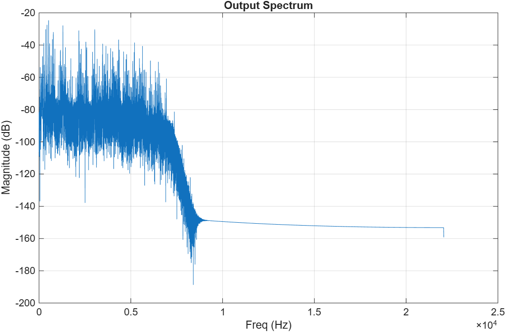
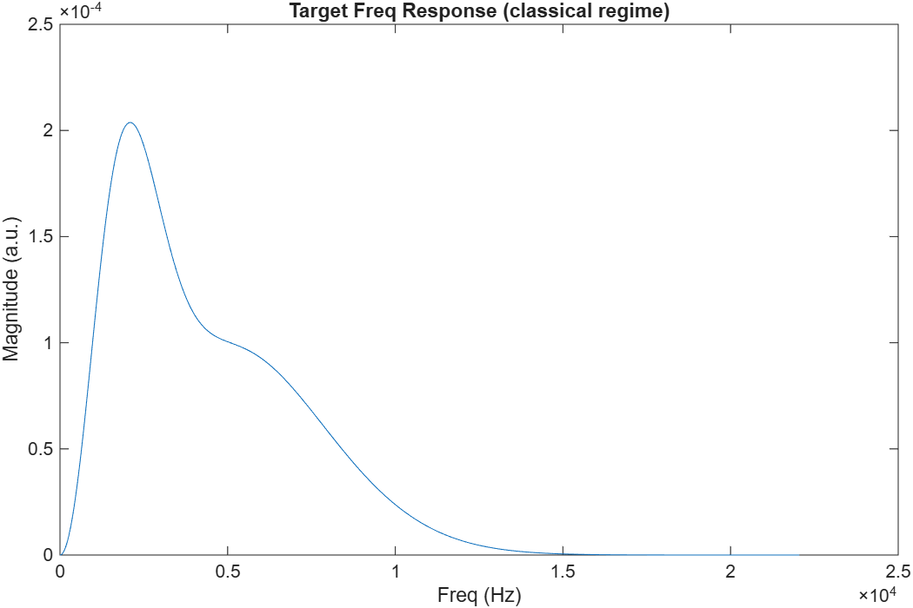
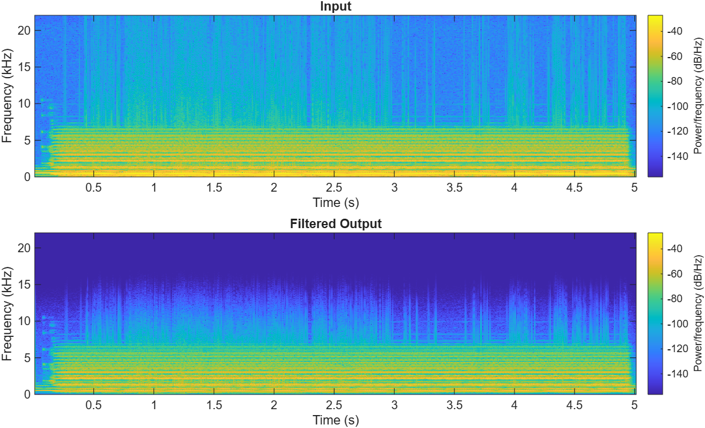
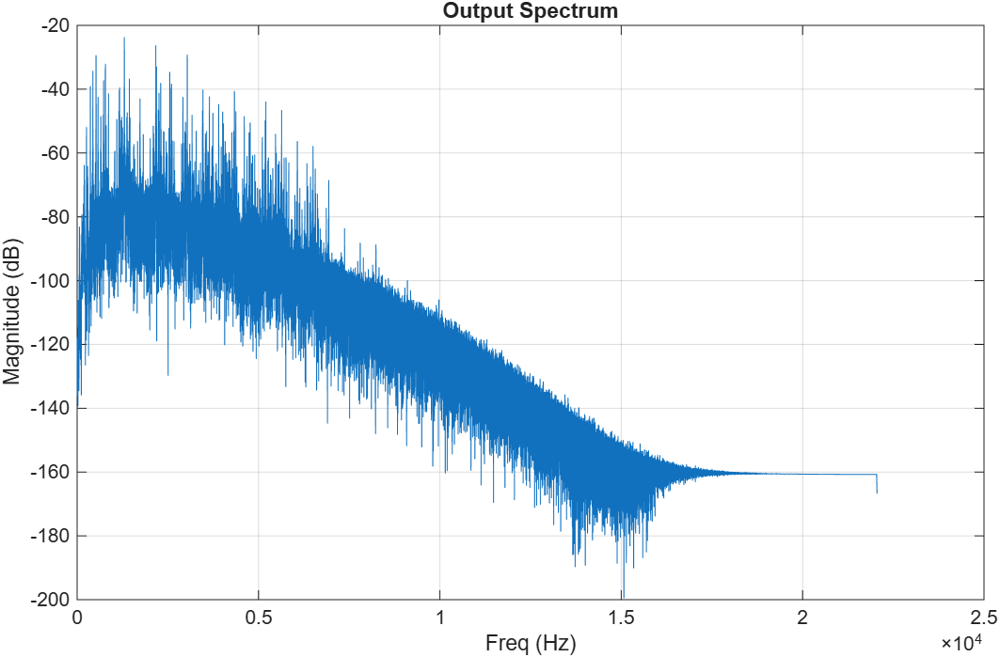

Introduction and Objectives
The motivation for this project came from a recognition in class that many of the filter designs we were looking at had a resemblance to the probability distributions I had been working with in my statistical mechanics class, PHYS 362, from last semester. These probability distributions were typically studied in the context of a variety of steady-state, analytic 'particles in a box' scenarios, in which probability distributions of parameters such as speed or energy would change shape and form depending on the box parameters. Thus, it seemed as though it could be possible to make a statistical mechanics-inspired equalizer, mapping the analytic probability distribution of a certain quantity to the frequency response of a digital filter. Fortunately, there was a wide breadth of 'particle-in-a-box' scenarios that we studied, and thus several distinct filter could be designed (Maxwell-Boltzmann distributions, Fermi-Dirac distributions, and Bose-Einstein distributions).
Thus, the objectives of this project were to design filters for each of these distinct scenarios.
Procedure and Theory
General Configuration
At the top of the script, the user is able to control several audio and environmental parameters.
In regards to the audio parameters, the user has control over thee sample rate, finite impulse response length (number of taps, must be odd), the type of window (Hamming, Hanning, or Blackman), the size of the frequency-sampling grid, the anchor frequency for the relative mapping mode, the clipping threshold, the lost probability threshold, and the duration of the filtered noise.
In terms of environmental parameters, the user first switches between the classical or quantum regime.
In the classical regime, they can control the dimensionality of the system (one-, two-, or three-dimensional), the box lengths in meters, the temperature of the environment (Kelvin), the boundary condition (hard or periodic), the frequency mapping method (relative or absolute), and the scale factor to use in absolute mode (audio Hz per transit Hz). Then, the user is able to list the species types and numbers from a pre-built lookup table or as custom entries (custom:amu).
In the quantum regime, users can similarly control the diemsnionality of the system, the box size (in meters, but typically in this regime nanometers is recommended), the temperature (Kelvin), the boundary condition (again, hard or periodic), the frequency mapping (relative or absolute), and the scale factor in absolute mode (audio Hz per transit Hz). In the quantum regime, the simulation only allows for one particle species in the environment, which is to say NO particle mixing. Thus, the user selects the particle species from the following: Fermions — electron, proton, neutron, He-3, Li-6, K-40, or Massive bosons — He-4, Li-7, Na-23, K-39, Rb-87. Then, the user is able to select the number of particles, the thermal energy cutoff (number of unoccupied levels kept), and then safety limits on memory for size constraints.
Regime Differentiation
The following sections are distinguished in their regime by several key assumptions. Firstly, a classical gas is well approximated by Maxwell-Boltzmann statistics in the scenario in which the thermal De Broglie wavelength, given by
is much less than the average spacing between particles. This collapses at either very low temperatures, in which the thermal wavelength becomes very large. The classical gas approximation also requires low densities, given by the condition
At very high densities, which can occur at low temperatures or very small box dimensions, the gas becomes degenerate, and begins to obey quantum statistics instead of classical Maxwell-Boltzmann. Within the script, there are safeguards to ensure that these limits are adhered to, and warnings for the user if their input parameters are no longer classical.
It is also important to note that the classical regime is considered in the non-relativistic limit, which is such that:
Classical Regime
Due to equipartition dominating the nature of energy distributions in the classical regime, with all distributions proportional to temperature up to a scale factor determined by dimensionality, the classical regime distribution is thus the probability distribution of particle speeds. In the classical regime, energy level spacings within the box are small enough such that the the gas can be describedby the Maxwell-Boltzmann weight \(e^{-mv^2/2kT}\) times the number of velocity states within a shell of radius \(v\), which scales as \(v^{d-1}\). For one species in \(d = 1, 2\) or \(3\) dimensions this gives
where mass enters only through \(a\), and \(\Gamma(x)\) is the Gamma function. The mean speed is
Speed is converted to frequency by the rate at which it traverses the box:
where \(\tau = 2\) for hard walls (a round trip) and \(\tau = 1\) for periodic walls. A mixture is the number-weighted sum
in which s indicates species. In relative mode the audio scale is
so the mean transit frequency lands on \(f_{\text{anchor}}\).
In this relative mode, temperature has no impact on the shape of this distribution, and the 'smearing' effect of the quantity is overwritten by the selection of the anchor frequency.
However, in absolute mode \(\kappa\) is user-set, so \(T\), \(m\) and \(L\) all change the filter shape, and the density on the audio axis carries the Jacobian,
Quantum Regime
In a small box the allowed momenta are discrete,
and the kinetic energy of each level is relativistic,
Each level is filled according to
using + for fermions (Fermi-Dirac) and − for massive bosons (Bose-Einstein). For fermions and massive bosons the chemical potential \(\mu\) is solved numerically such that the number of state occupations add up to the particle number,
where \(g\) is the spin degeneracy from the lookup table. Each level then carries a probabilistic weight and therefore the distribution has mean energy
Relative mode maps \(f_\text{audio} = \frac{f_\text{anchor}E}{\langle E\rangle}\), and absolute mode maps \(f_\text{audio} = \frac{\kappa\,E}{h}\) with user-set \(\kappa\). A cold Fermi gas has a sharp edge at \(E_F\), and at \(T = 0\) its mean energy is
Anchoring \(\langle E\rangle\) therefore puts the lowpass cutoff at \(\dfrac{d+2}{d}\) times the anchor frequency. It is worth noting the special case in which the temperature of a three-dimensional system is below \(T_c\), in which
where \(\zeta(3/2)\) is the Riemann zeta function. Below \(T_c\), a boson gas puts a macroscopic fraction of its particles in the lowest energy level, which appears as a narrow peak.
It is important to note that the code automatically shifts the ground level energy state to zero.
Finite Impulse Response Filter Design
To design the finite impulse response filter, the obtained frequency spectrum is mirrored and appended to account for negative frequencies.

Then, the inverse Fourier transform is taken to obtain an impulse response centred about zero. This impulse response is then windowed according to the user-set window type, and then the input signal is filtered based on the determined filter coefficients.
Challenges
There were several iterations of this project over the course of the work. Initially, I considered the basis of the filter parameters to come from molecular dynamics, however this would be heavily computationally intensive and seemed as though it wouldn't work for live input in any possible scenario. The analytic solutions to these problems were also what I was more familiar with, and so it seemed more appropriate to simply consider those solutions as the basis instead.
After determining this, and beginning work on the project, there were several other hurdles to overcome. Another early conceptualization of implementation had a built-in understanding of the quantum/classical limits, and discrete/continuum limits, and would allow for the mixing of these systems. However, this proved to be very, very complicated. Particularly considering the dominance of some statistics over others in these scenarios (electron in a 3D quantum box has a very different energy scale than \(10^6\) xenon atoms in a 3cm x 3cm 2D box).
So, to handle to classical/quantum limit case, it seemed as though the most appropriate course of action was to separate the two regimes and warn the user if their input parameters in one regime appeared to fit better with the other regime.
In regards to the discrete vs. continuum limits, I had early concerns that the implementation of discrete limits would look like a comb filter with very narrow spacing in the frequency domain. After several attempts to design the environment in the discrete limit, I realized that a comb filter isn't really the kind of filter I wanted, and rather I wanted the shape of the quantum filters to be that of their continuum limits.
This also had some additional added benefits. Without the consideration for discrete states, all of the distributions were smooth, and thus could be easily dealt with by the filter design function.
Examples
Below is a sample filter design and resultant output spectrum for a test input signal. The filter considers the following parameters:
- Quantum regime
- Three-dimensional
- Temperature: 0.1K
- Box dimensions: [10 10 10]*1e-9
- Relative mapping: 4400Hz anchor
- Particle species and count: 2500 protons



Below is another filter design and resultant output spectrum for a test input signal. The filter considers the following parameters:
- Classical regime
- Three-dimensional
- Temperature: 900K
- Box dimensions: [0.3 0.3 0.3]
- Relative mapping: 4400Hz anchor
- Particle species and count:
- 2e24 Helium atoms
- 1e24 N2 atoms
- 3e23 O2 atoms
- 6e21 Argon atoms
- 3e20 CO2 atoms


